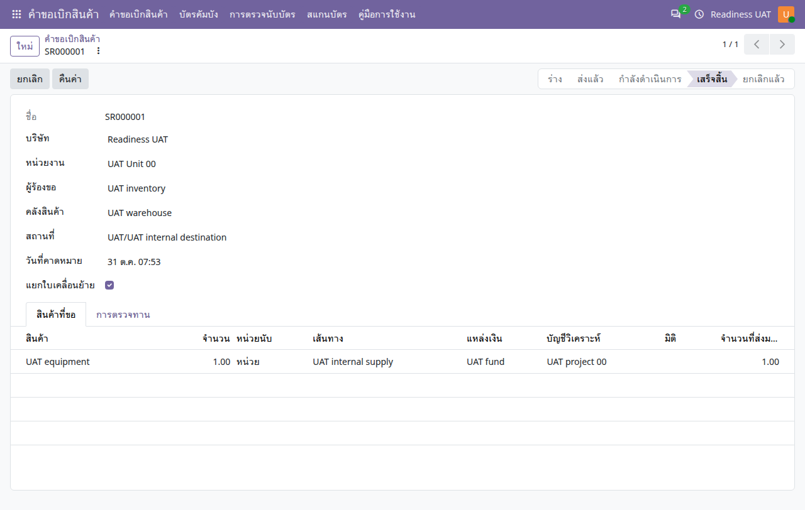

คู่มือการใช้งาน
คำขอเบิกสินค้า
ขอสินค้า อนุมัติและจัดหา ติดตามการส่งมอบ รวมถึงบัตร Kanban และการสำรวจบัตร
ไม่พบข้อความ ลองใช้คำอื่นหรือล้างคำค้นหา
เริ่มใช้งานและอ่านหน้าจอ
เปิดแอปจากเมนูหลัก แล้วเลือก คู่มือการใช้งาน คู่มือเปิดในแท็บใหม่เพื่อให้ดูพร้อมหน้าทำงานได้ เลือกแอปอื่นจากรายการด้านซ้าย หรือค้นหาคำในคู่มือนี้ และใช้ปุ่มพิมพ์ / บันทึก PDF เมื่อต้องการสำเนา
- ตรวจบริษัทที่มุมขวาบนและหน่วยงานในเอกสารก่อนสร้างหรืออนุมัติ เมนูและปุ่มขึ้นกับสิทธิ์ของบัญชี
- หลังแก้ข้อมูล ให้ใช้ปุ่มบันทึก / ไอคอนบันทึกตามที่แบบฟอร์มแสดง แล้วตรวจสถานะและเลขเอกสารก่อนออกจากหน้า
- ภาพประกอบเป็นข้อมูลจำลอง ชื่อรายการ ภาษา หรือเลขเอกสารอาจต่างจากบัญชีของคุณ ตัวเลขในภาพไม่ใช่ค่าที่ต้องกรอก
- ข้อความผิดเงื่อนไขให้จดเลขเอกสารและข้อความที่แสดง ส่งให้ผู้รับผิดชอบงานตรวจ อย่าส่งรหัสผ่านหรือข้อมูลเข้าสู่ระบบ
- ถ้าคู่มือเปิดแล้วภาพหรือภาษาเก่าค้าง ให้บันทึกงานในหน้าระบบก่อน แล้วรีเฟรชแท็บคู่มือ
ลำดับงานคำขอ
- ร่างคำขอ
- ส่งคำขอ
- อนุมัติ / จัดหา
- รับหรือส่งมอบสินค้า
- ตรวจความเสร็จสิ้น
คำขอเบิกเป็นต้นทางประสานงานคลัง เส้นทางจัดหาอาจสร้างการโอนหรือการจัดซื้อขึ้นกับสินค้าและกฎคลังที่ตั้งไว้ การอนุมัติคำขอยังไม่แปลว่าส่งมอบครบแล้ว
สร้างและส่งคำขอ
คำขอเบิกสินค้า → คำขอเบิกสินค้า → ใหม่
- เลือกบริษัท หน่วยงาน คลังและสถานที่ที่เกี่ยวข้อง พร้อมวันที่ต้องการ
- เพิ่มสินค้า หน่วยนับ และจำนวนที่ต้องการ ตรวจข้อมูลแหล่งเงิน/วิเคราะห์ตามกระบวนงาน
- บันทึก ตรวจผู้ขอและรายการ แล้วกดส่ง
- ติดตามสถานะและเอกสารที่ระบบเชื่อมให้ ไม่ส่งคำขอซ้ำเพื่อเร่งการจัดหา

อนุมัติและติดตามการส่งมอบ
- ผู้จัดการคำขอตรวจรายการและปริมาณคงเหลือ แล้วกดอนุมัติ/จัดหา หรือปฏิเสธตามหน้าที่
- เปิดเอกสารโอนหรือจัดซื้อที่เกี่ยวข้อง ตรวจต้นทาง ปลายทาง และจำนวน
- เจ้าหน้าที่คลังบันทึกปริมาณจริงและยืนยันเอกสารคลัง หากไม่ครบให้จัดการส่วนค้างตามที่ระบบเสนอ
- กลับคำขอ ใช้ตรวจความเสร็จสิ้นตามสิทธิ์ แล้วตรวจยอดส่งมอบที่ระบบอ้างอิง
คืนสินค้าและยกเลิก
คืนสินค้าจากเอกสารโอนที่ส่งมอบแล้ว แล้วตรวจยอดส่งมอบสุทธิของคำขอ การยกเลิกหรือกลับเป็นร่างต้องตรวจเอกสารจัดหาปลายทางก่อน ไม่แก้จำนวนในคำขอแทนการคืนสินค้าจริง
บัตร Kanban และสำรวจบัตร
- ผู้รับผิดชอบตั้งบัตรให้ตรงสินค้า คลัง สถานที่ และปริมาณ แล้วใช้ปุ่มขอสินค้าเมื่อถึงเงื่อนไข
- สำหรับการสำรวจบัตร ให้สร้างงานสำรวจและตรวจรายการบัตรที่คาดว่าจะพบก่อนเริ่ม
- ใช้เมนูสแกนบัตรบันทึกบัตรที่พบ ตรวจรายการสแกนและรายการขาด
- เมื่อสำรวจครบให้ดำเนินการเสร็จสิ้นและปิดตามสถานะ ปิดงานหลังตรวจความคลาดเคลื่อนแล้ว
ปัญหาที่พบบ่อย
| อาการ | ตรวจอย่างไร |
|---|---|
| อนุมัติแล้วไม่พบของ | ตรวจเส้นทางจัดหาและเอกสารคลัง/จัดซื้อที่สร้าง ไม่ใช้สถานะอนุมัติแทนการส่งมอบ |
| ยังไม่เสร็จสิ้น | ตรวจการโอนค้าง การส่งมอบบางส่วน และการคืนสินค้า |
| ไม่พบคลังหรือสินค้า | ตรวจบริษัท สถานที่ เส้นทางสินค้า และสิทธิ์หน่วยงาน |
| สำรวจบัตรไม่ตรง | ตรวจขอบเขตบัตรที่คาดไว้ รายการสแกนซ้ำ และบัตรที่ขาดก่อนปิด |